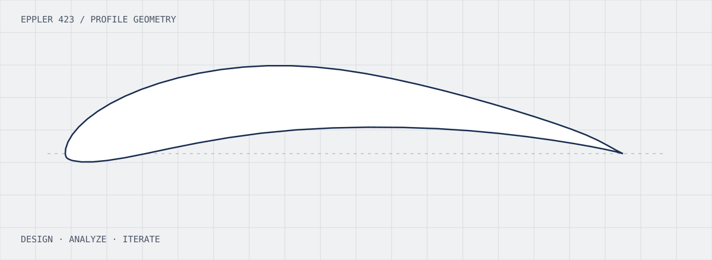
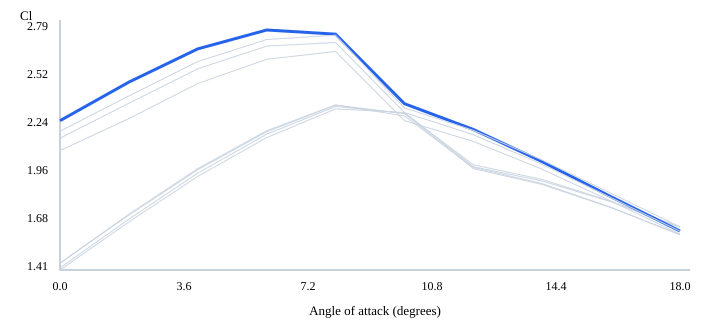

Setting up a wing
I separated the workflow into adjusting a fixed set of chords and sizing the elements to fit geometric limits. Each element has its own profile, chord, angle, gap, and overlap. I support absolute angles and angles relative to the preceding element so either convention can be entered without manually rebuilding the assembly. Imported coordinates, the offline library, and NACA four-digit generation use the same geometry workflow.
Checking the geometry
I reject intersections and insufficient clearance before calling the solver, since a high coefficient is useless for elements that cannot fit. The current Size & fit mode also applies height ceilings to selected airfoils and length limits to selected groups. That length is the sum of each element’s horizontal width after rotation, including overlapping portions separately. Making the measurement explicit prevents a bounding-box check from silently applying a different constraint.
Running and recording sweeps
I use coarse sweeps followed by local refinement, revisiting coupled chords, angles, gaps, and overlaps in later rounds. Independent candidates run in separate JavaFoil processes, with worker selection based on physical CPU cores. Caching avoids repeated evaluations, and cancellation keeps completed results.
I keep the reference chord fixed while searching chord changes so the objective’s normalization remains consistent. I also calculate Reynolds number from airspeed, chord, density, and viscosity; span controls the optional finite-span approximation rather than acting as the Reynolds length scale.
Saving a candidate I can rebuild
I save the winning geometry with its configuration, coefficients, solver cases, and search history. The export includes CAD geometry, input profiles, CSV tables, a replayable setup, and a PDF report with pressure and surface-velocity plots. This lets me take a candidate into CAD or repeat the solver run without reconstructing it from a screenshot.
Adding a separate viscous CFD check
I added an adapter that meshes the saved geometry with Gmsh and runs SU2’s two-dimensional incompressible SST RANS solver, with optional transition modeling. JavaFoil remains the fast search backend; the SU2 result is a separate analysis of the selected geometry.
The adapter records residuals, coefficient stability, wall shear, y+, surface tables, and a volume solution. A completed solver process can still be unconverged, so I retain that status in the report. I use reversed wall shear as an indication to inspect possible separation, not as a precise measurement of separated area.
What I use it for
I use the app to screen arrangements and identify candidates for further CFD. JavaFoil can be unreliable around narrow slots and strong separation, and the local search does not guarantee a global maximum. The optional SU2 path has integration checks; mesh and domain sensitivity studies and experimental comparisons are still needed before claiming accuracy for maximum-lift or ground-effect results.

